Os complexos econômicos são caracterizados por meio de setores-chave para o
desenvolvimento econômico, de fatores de competitividade setorial e regional e ligados a uma mesma base
técnica e produtiva.
E por que isso é importante? Porque a economia fluminense se caracteriza por ter uma estrutura produtiva
oca e pouco diversificada. Vejamos o exemplo do setor de petróleo e gás: esse setor possui o maior peso
na economia fluminense, porém, as atividades existentes estão concentradas na extração de um recurso não
renovável, ou seja, nem todas as atividades das demais etapas da cadeia produtiva, como o refino,
petroquímico, estão plenamente desenvolvidas no Rio.
Clique nos ícones abaixo para saber mais sobre cada complexo econômico.
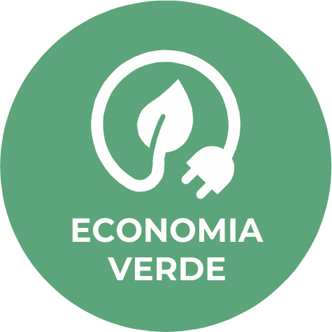
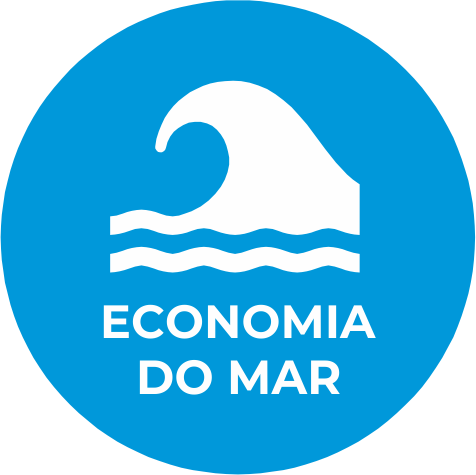
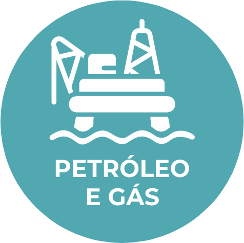
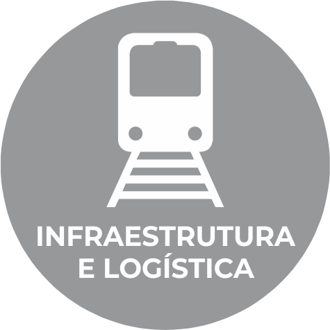
A Economia Verde responde às necessidades de preservação e recuperação dos recursos naturais, além de seu caráter sustentável para o desenvolvimento econômico e a necessidade de descarbonização da economia. Assim, o critério sustentabilidade socioambiental determinou a escolha da Economia Verde, que abrange a agricultura de baixo carbono, produção de energias renováveis, a gestão de resíduos sólidos e circularidade e os serviços financeiros de negociação de ativos ambientais do estado. Ou seja, trata-se de setores capazes de terem uma articulação entre si e de ser um meio para a concretização das missões. No Rio de Janeiro, podemos apontar como setores líderes:
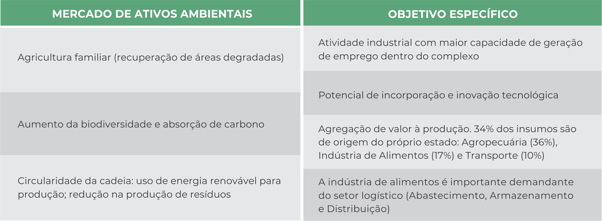
O Estado do Rio de Janeiro tem os seguintes fatores de competitividade:
Ativos Ambientais: o Rio já possui protocolos assinados com agentes de mercado de carbono para a
negociação de ativos no estado.
Capacidade científico-tecnológica e inovativa do setor de P&G pode ser utilizada como vetor de
mudança, para converter o estado em um hub global de Pesquisa, Desenvolvimento e Inovação no
âmbito da transição energética.
Potencial para o desenvolvimento da agricultura de baixo carbono, apoiada sobre uma produção
agroflorestal: redução nas emissões GEE e geração de empregos nas regiões mais vulneráveis em
termos socioeconômicos.
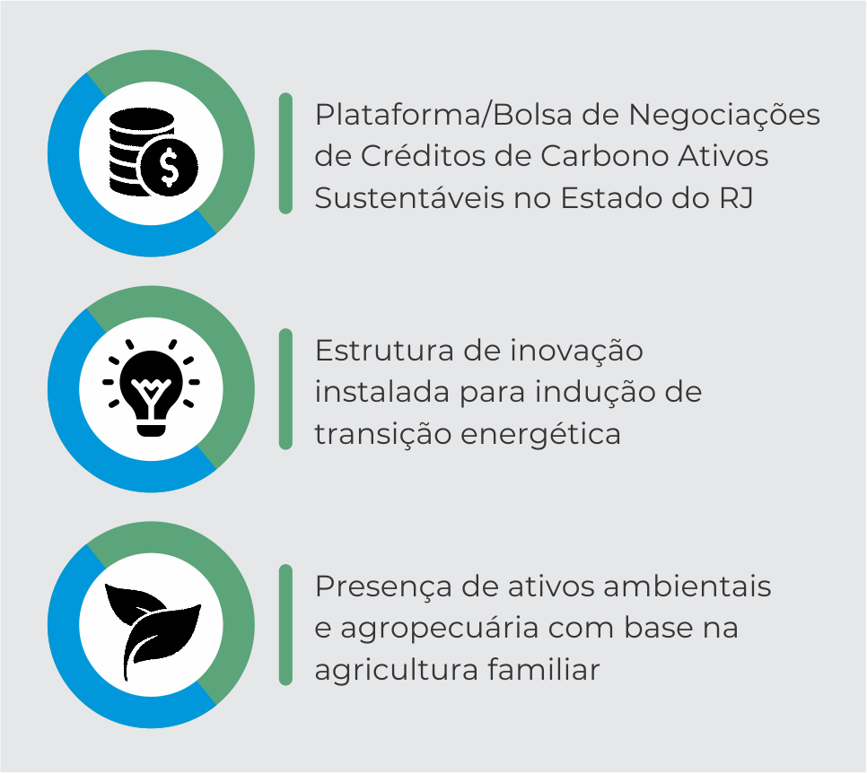
Os critérios para a escolha da Economia da Saúde foram: o potencial de gerar uma economia diversificada e integrada, bem como apresentar vantagem competitiva associada ao progresso técnico; por possuir força de arrecadação no estado e por ter marco institucional do setor com políticas públicas. Assim, foi a área da saúde que formulou, de forma sistematizada, a ideia de complexo econômico. Há mais de 20 anos, a FIOCRUZ pesquisa, debate e faz acontecer, na saúde, uma matriz que articula política social, política industrial e política de inovação. O Complexo Econômico da Saúde requer a constituição de sistemas universais e em bases produtivas e de inovação fortes, soberanas e socialmente orientadas. No Rio de Janeiro, podemos apontar como setores líderes:
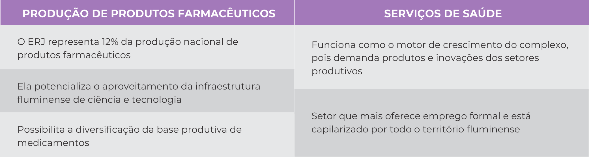
Há, no ERJ, algumas características que favorecem o desenvolvimento desse complexo econômico, denominados fatores de competitividade. São eles: sistema universal de saúde com capilaridade em todo território e maior estrutura de saúde pública do país; produção relevante em ciência e tecnologia na área de saúde; indústrias relevantes na área farmacêutica, equipamentos, teste para diagnósticos, produção de vacinas e soros; presença de biodiversidade e recursos naturais para diversificação produtiva.
A Economia do Mar foi escolhida pelos critérios da sustentabilidade socioambiental e do marco institucional existente de interação do setor com políticas públicas, como a existência de instituições tradicionais e a Lei Estadual nº 9.466/2021, que define uma política estadual a elaboração de um plano estratégico para a Economia do Mar. Esse complexo é composto pelas cadeias produtivas do petróleo e gás*, indústria naval, navegação de apoio marítimo e indústria náutica, setor pesqueiro (pesca, aquicultura e afins), defesa, turismo, esporte e lazer e biotecnologia marinha. No Rio de Janeiro, podemos apontar como setores líderes:
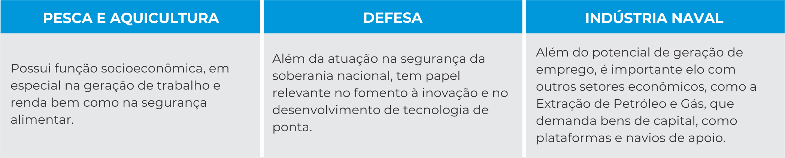
Os fatores de competitividade do Estado do Rio de Janeiro são:
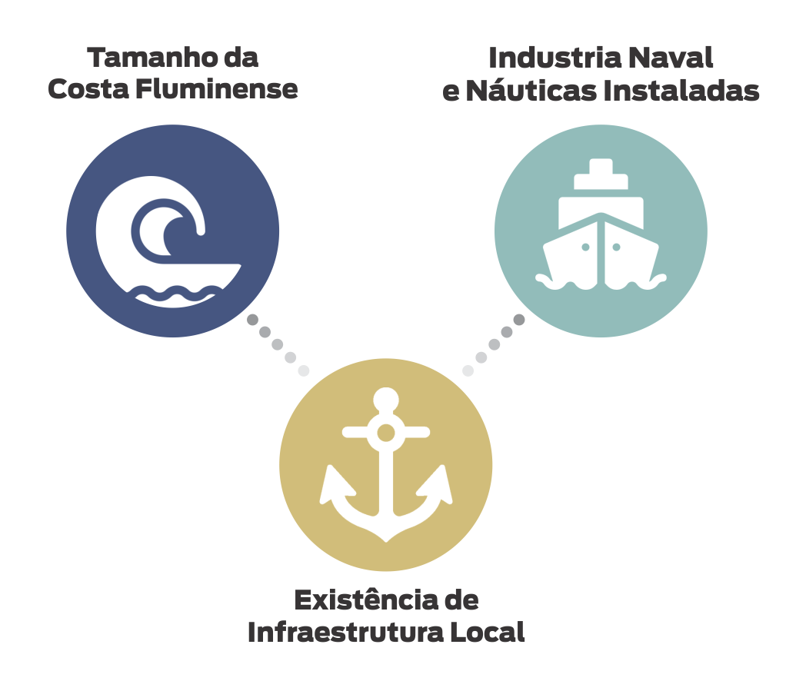
O complexo econômico do P&G foi selecionado pelo peso do setor na economia fluminense, além de
apresentar uma economia diversificada e integrada e por representar uma grande força de
arrecadação para o estado. Ele agrega a exploração e produção de petróleo e gás natural
(extração e atividades de apoio à extração), atividades de refino do petróleo e o processamento
ou regaseificação do gás natural, e consumo final ou consumo material dos produtos derivados. No
Rio de Janeiro, verificou-se que a extração, o refino e as indústrias de 2ª e 3ª gerações são
setores capazes de atrair outros setores, com possibilidade de incremento dos empregos e aumento
de arrecadação do complexo de Petróleo & Gás. Assim, são setores líderes a Fabricação de
Produtos do Refino do Petróleo; e a Fabricação de Petroquímicos.
No Estado do Rio de
Janeiro, os fatores de competitividade são:
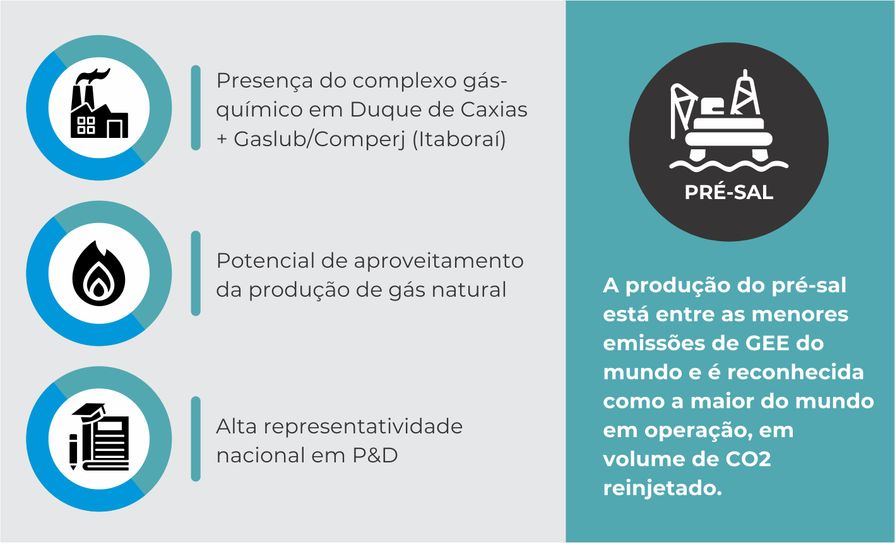
A ampla diversidade cultural presente no Estado do Rio de Janeiro tem a capacidade de
proporcionar conexões culturais e importantes atratividades turísticas por todo o território
fluminense. Para mais, o destaque histórico do estado em termos nacionais e internacionais pode
ser resgatado com maior grau de complexidade e valor agregado. Esses elementos, com potencial de
melhor aproveitamento, tornam a Economia da Cultura e do Turismo estratégica para o
desenvolvimento econômico e social. O complexo da Economia da Cultura e do Turismo abarca a
indústria audiovisual, setor de viagens, bares e restaurantes, design, hospedagens e alojamentos
e festas e celebrações. Os setores com maior participação no complexo da cultura no estado do
Rio de Janeiro são: editorial (29,67%), festas e celebrações (23,46%) e audiovisual (22,36%). A
participação do estado do Rio de Janeiro no total de empregos do Brasil no setor de audiovisual
equivale a 13,96%.
O Estado do Rio de Janeiro tem os seguintes fatores de
competitividade:
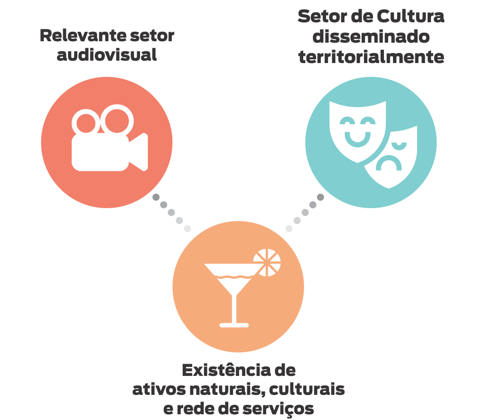
O complexo da Infraestrutura e Logística foi selecionado por ser um ativo histórico do estado, com relevante capacidade de arrecadação, além ser considerado seu caráter estrutural para o desenvolvimento econômico, sendo transversal aos demais complexos. A Infraestrutura e Logística dá suporte à atividade produtiva e abrange a infraestrutura física (urbana – abastecimento de água e esgoto, energia elétrica, telecomunicações) e a infraestrutura logística de cargas (portos, aeroportos, rodovias, ferrovias, dutovias, centros logísticos). A cadeia produtiva básica se refere à construção civil e complementos. Podemos apontar como setores líderes:
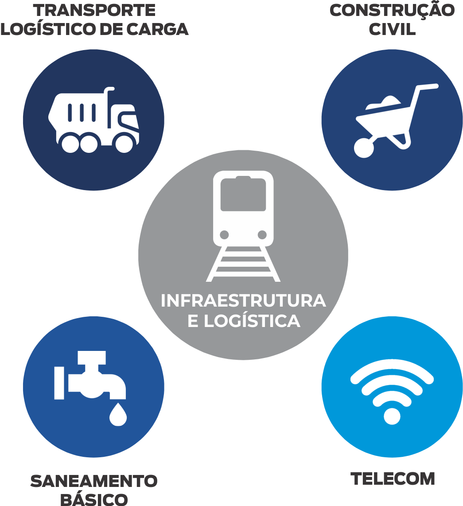
São fatores de competitividade do estado do Rio de Janeiro:
Energia e Telecomunicações são setores com forte arrecadação, geração de empregos e atração de
investimentos em T.I. O RJ tem empresas estratégicas para o uso e ampliação da infraestrutura 5
G.
O setor de saneamento, vital para as diretrizes ESG, apresenta vasta demanda de investimentos,
sendo que as concessões para o RJ são urgentes, com reflexos positivos para a indústria local e
postos de trabalho.
Investimentos em logística de cargas tem demanda acumulada no país, e no território fluminense o
conjunto de ativos logísticos apresenta excelentes oportunidades, em parcerias público-
privadas. São essenciais para o transporte de produtos siderúrgicos, óleo e gás, automóveis,
alimentos e bebidas, que inserem competitivamente o RJ no comércio nacional e internacional.
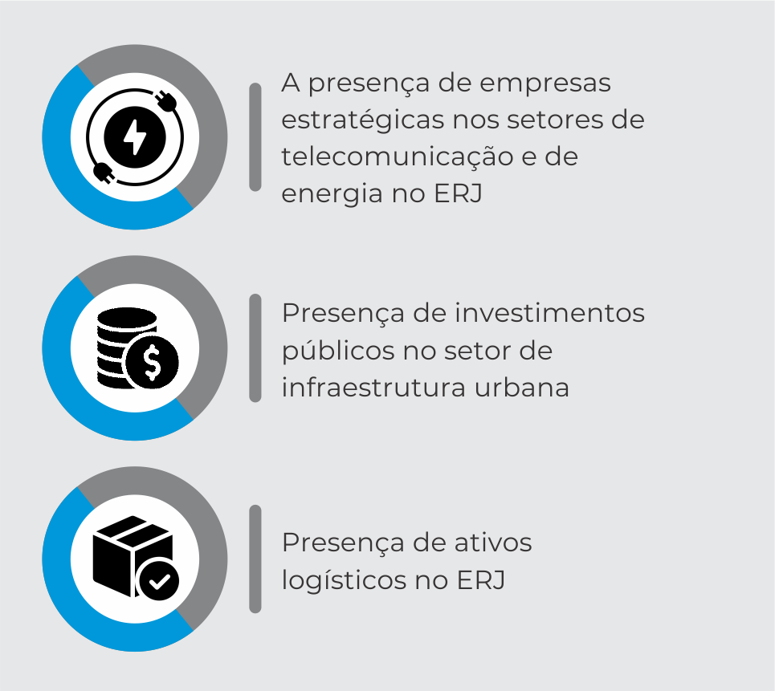
Para fins de identificação e seleção dos complexos econômicos no âmbito do PEDES, foram estabelecidos os seguintes critérios técnicos e econômicos:
| Critérios de identificação dos complexos econômicos do ERJ | Complexos Econômicos |
|---|---|
| O peso do setor na economia fluminense | Petróleo e Gás |
| O marco institucional existente de interação do setor com políticas públicas | Cultura e Turismo |
| Economia do Mar | |
| Economia da Saúde | |
| Economia diversificada e integrada | Economia da Saúde |
| Petróleo e Gás | |
| Vantagem competitiva associada ao progresso técnico | Petróleo e Gás |
| Economia da Saúde | |
| Sustentabilidade Socioambiental | Economia Verde |
| Economia do Mar | |
| Força da arrecadação do complexo | Economia da Saúde |
| Infraestrutura e Logística | |
| Petróleo e Gás |